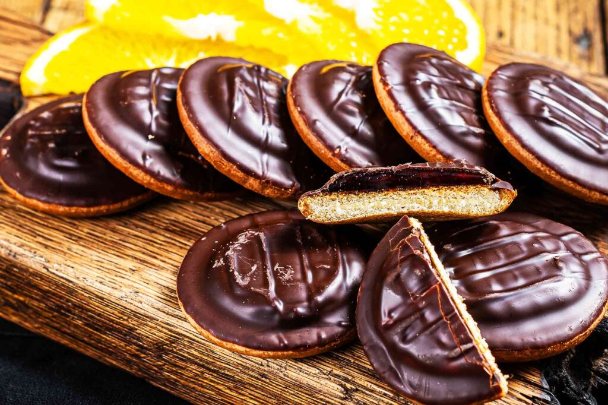

Home
Copycat Jaffa cakes

Description
Indulge in a beloved traditional British sweet treat made right in your own kitchen.
This copycat Jaffa Cake is a bite-sized British classic that balances zesty fruit and rich chocolate sweetness. It features a light, fluffy sponge cake base topped with a vibrant, cooling disc of sweet orange jelly. Everything is covered in a smooth, velvety blanket of melted semi-sweet chocolate that snaps delightfully with every single bite.
Ingredients
- 1 (3.4 ounce) package orange flavored jell-O mix
- 1 cup boiling water
- 3 tablespoons orange preserves
- 1 cup cold water
- 1 large egg
- 2 tablespoons white sugar
- 2 tablespoons self rising flour
- 6 ounces semi-sweet chocolate, chopped
Steps
- Add Jell-O to a bowl and whisk in boiling water until gelatin mix is dissolved. Whisk in orange preserves until dissolved. Stir in cold water. Pour mixture into a shallow 9x13 dish and chill in the fridge until set, at least 2 hours, best overnight.
- Preheat the oven to 350 degrees F (180 degrees C). Grease a 12-cup muffin tin.
- Whisk egg and sugar together in a bowl until pale and fluffy using an electric mixer. Gently fold in flour until combined.
- Fill each muffin hole with 1 heaping teaspoon of batter and spread batter to make sure it covers the entire bottom. Once all 12 holes are filled distribute remaining batter evenly among the 12 holes.
- Bake in the preheated oven until the cakes should spring back when lightly pressed, 8 to 9 minutes. Remove muffin tin from the oven and allow to cool in the tin,5 to 10 minutes. Transfer to a wire rack to finish cooling.
- Meanwhile, melt chocolate in a microwave-safe glass or ceramic bowl in 20-second intervals, stirring after each interval until chocolate is completely melted, 1 to 3 minutes. Let chocolate cool to thicken slightly.
- Remove cooled and set Jell-O from the refrigerator and cut out 12 circles using a 2-inch round cookie cutter. Place 1 Jell-O round on top of each cooled cake. Remove edges of Jell-O so that the melted chocolate can rest on the cake base. Spoon melted and cooled chocolate over the Jell-O and allow to set completely.